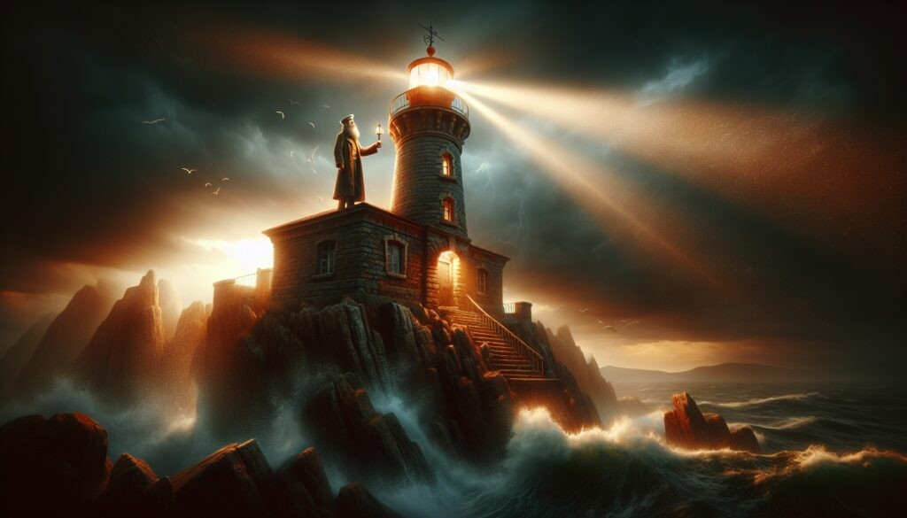

El faro que se enciende solo

El Faro del Ahogado fue desconectado de la red eléctrica hace más de veinte años, cuando dejó de operar oficialmente. Sin embargo, pescadores de la zona insisten en que, durante las noches de tormenta más fuertes, su luz vuelve a encenderse.
Algunos lo atribuyen a un guardafaros que se negó a abandonar su puesto incluso después de su fallecimiento. Otros, simplemente, prefieren no acercarse demasiado a comprobarlo.
Sea como sea, la propiedad se vende con la particularidad de que "la luz se enciende sola, sin necesidad de pagar cuenta de luz", según destaca el aviso de venta.